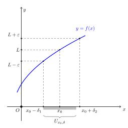
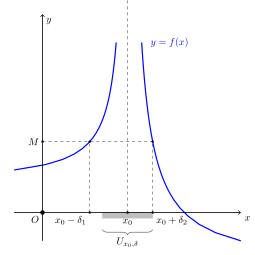

23. Introduzione all’analisi#
In questa sezione viene richiamato il concetto di funzione introdotto nella sezione precalcolo. Viene introdotto il concetto di limite e definito in termini topologici (intervalli, punti di accumulazione, insiemi aperti e chiusi,…). Il concetto di limite viene utilizzato per dare una definizione di funzione continua. Vengono poi presentati alcuni teoremi e proprietà di limiti e funzioni continue.
23.1. Funzioni reali a variabile reale, \(f: \mathbb{R} \rightarrow \mathbb{R}\)#
Per un’introduzione alle funzioni reali fa variabili reali si rimanda al capitolo dedicato nella sezione precalcolo.
23.2. Limiti#
23.2.1. Cenni di topologia per il calcolo#
todo Punto di accumulazione e punto isolato, intorno, insiemi aperti e chiusi, limsup/liminf, max/min,… E” necessario? Il minimo indispensabile
23.2.1.1. Intervalli#
Definition 23.1
Un intervallo \(I\) è un sottoinsieme dei numeri reali \(\mathbb{R}\) «senza buchi», cioè se due numeri \(x\), \(y > x\) appartengono a \(I\), allora tutti i numeri reali \(u\) compresi tra \(x\), \(y\) appartengno a \(I\).
Example 23.1 (Intervalli e sottoinsiemi che non sono intervalli)
Così ad esempio, l’insieme dei numeri reali compresi tra 2 e 3,
è un sottoinsieme e intervallo di \(\mathbb{R}\). L’unione degli insiemi di numeri reali compresi tra 0 e 1, e tra 2 e 3,
è un sottoinsieme di \(\mathbb{R}\) ma non è un intervallo, poiché non è soddisfatta la definizione: ad esempio, il numero \(1.3\) è compreso tra due numeri appartenenti all’insieme \(S\), ad esempio \(0.1\) e \(2.\overline{7}\) ma non appartiene a \(S\).
Definition 23.2 (Intervallo limitato)
Un intervallo è limitato superiormente se esiste un numero \(M \in \mathbb{R}\) tale che tutti gli elementi dell’intervallo sono minori di \(M\); un intervallo è limitato inferiormente se esiste un numero \(N \in \mathbb{R}\), tale che tutti gli elementi dell’intarvallo sono maggiori di \(N\).
In caso contrario, gli intervalli vengono definiti illimitati
Definition 23.3 (Intervalli aperti e chiusi)
Un intervallo chiuso è un intervallo che comprende gli estremi dell’insieme
Un intervallo aperto è un intervallo che non comprende gli estremi dell’insieme,
Pensando alla rappresentazione dei numeri reali sulla retta reale, orizzontale e orientata con verso positivo verso destra, ci si può riferire all’estremo inferiore come estremo sinistro e all’estremo superiore come estremo destro dell’intervallo.
I singoli estremi di un intervallo possono essere chiusi o aperti. Ad esempio, i possibili intervalli di numeri reali sono:
\((a,b)\) intervallo limitato aperto sia a sinistra sia a destra
\([a,b)\) intervallo limitato chiuso a sinistra e aperto a destra
\((a,b]\) intervallo limitato aperto a sinistra e chiuso a destra
\([a,b]\) intervallo limitato chiuso sia a sinistra sia a destra
\([a,+\infty)\) intervallo illimitato, chiuso a sinistra infinito a destra
\((a,+\infty)\) intervallo illimitato, aperto a sinistra infinito a destra
\((-\infty,b]\) intervallo illimitato, infinito a sinistra chiuso a destra
\((-\infty,b)\) intervallo illimitato, infinito a sinistra aperto a destra
\((-\infty,+\infty)\) intervallo illimitato, che coincide con la retta reale
todo *Argomenti «non strettamente necessari», da aggiungere come approfondimenti in appendice?
discutere estremi, maggiorante/minorante
insiemi non limitati sono aperti o chiusi?
discussione massimo/minimo, limsup/liminf
23.2.2. Definizione di limite#
Limite finito al finito
dove la condizione sull’intorno di un punto \(x_0\) al finito per funzioni reali può essere riscritta come \(0 < | x - x_0 | < \delta\) per un intorno simmetrico del punto \(x_0\).
 |
 |
Limite infinito al finito
dove la condizione sull’intorno di un punto \(x_0\) al finito per funzioni reali può essere riscritta come \(0 < | x - x_0 | < \delta\) per un intorno simmetrico del punto \(x_0\). Se \(f(x) > M\) allora il limite tende a \(+\infty\), se \(f(x) < -M\) allora il limite tende a \(-\infty\).
Limite finito all’infinito
dove la condizione sull’intorno di un punto all’infinito per funzioni reali può essere riscritta come \(x < R\) per un intorno di \(-\infty\) o \(x > R\) per un intorno di \(+\infty\).
Limite infinito all’infinito
dove la condizione sull’intorno di un punto all’infinito per funzioni reali può essere riscritta come \(x < R\) per un intorno di \(-\infty\) o \(x > R\) per un intorno di \(+\infty\). Se \(f(x) > M\) allora il limite tende a \(+\infty\), se \(f(x) < -M\) allora il limite tende a \(-\infty\).
23.3. Funzioni continue#
23.3.1. Definizione#
Definition 23.4 (Funzione continua)
Una funzione reale \(f: D \in \mathbb{R} \rightarrow \mathbb{R}\) è continua in un punto \(x_0 \in D\) se esiste il limite della funzione e coincide con il valore della funzione
Una funzione reale è continua in un dominio todo o insieme? se è continua in ogni punto del dominio.
23.3.2. Punti di discontinuità#
Tipo 1 - salto: limite destro e sinistro esistono finiti, ma non sono uguali
Tipo 2 - essenziale: limite destro o sinistro non esistono o sono infiniti
Tipo 3 - eliminabile: limite destro e sinistro esistono finiti, sono uguali, ma non sono uguali all valore della funzione nel punto
todo aggiungere immagini
23.3.3. Teoremi#
23.3.3.1. Teorema di Weierstrass#
Theorem 23.1 (Teorema di Weierstrass)
Data una funzione reale continua \(f: [a,b] \rightarrow \mathbb{R}\) definita sull’intervallo limitato chiuso \([a,b]\), la funzione \(f(x)\) ammette un punto di massimo assoluto e un punto di minimo assoluto nell’intevallo \([a,b]\).
Necessità delle ipotesi
Mentre non viene fornita una dimostrazione del teorema, si discute la necessità delle ipotesi fornendo controesempi:
la funzione non continua definita in \(I = [-1,1]\)
\[\begin{split}f(x) = \begin{cases} |x| & x \ne = 0 \\ 0.5 & x = 0 \end{cases} \ ,\end{split}\]assume valori massimi in \(I\), in corrispondenza degli estremi dell’intervallo, ma non ha minimo. Infatti il limite inferiore della funzione nell’intervallo è \(\liminf f(x) = 0\), ma non esiste alcun valore \(x \in I\) tale che \(f(x) = 0\), proprio per come è stata costruita la funzione con una discontinuità di tipo 1 - salto in \(x = 0\),
la funzione continua \(f(x) = e^{-x^2}\) definita sull’intervallo non limitato superiormente \(I = [-2, +\infty)\) ha massimo nell’intervallo in corrispondenza di \(x = 0\), \(\max_{x \in I} f(x) = 1\), ma non ha minimo poiché \(\liminf f(x) = 0\) ma non esiste nessun valore \(x \in I\) tale che \(f(x) = 0\)
la funzione continua \(f(x) = x^2\) definita su \(I = (1,2)\) non ammette né massimo, né minimo, poiché il limite inferiore e superiore della funzione si verificano in corrispondenza degli estremi (non inclusi) dell’intervallo aperto. Più esplicitamente, \(\limsup_{x\in I} f(x) = 4\) ma \(\nexists x \in I, \ f(x) = 4\); \(\liminf_{x\in I} f(x) = 1\) ma \(\nexists x \in I, \ f(x) = 1\);
23.3.3.2. Teorema della permanenza del segno#
Theorem 23.2 (Teorema della permanenza del segno)
Data una funzione continua \(f: D \rightarrow \mathbb{R}\) continua, e un punto \(x_0 \in D\) (todo o punto di accumulazione?). Se \(f(x_0) > 0\) allora \(\exists U_{x_0}\) t.c. \(f(x) > 0\) per \(\forall x \in U_{x_0} \cap D\).
todo Non è necessario che la funzione sia continua in \(x_0\), ma è sufficiente che esista il limite della funzione \(\lim_{x \rightarrow x_0} f(x) = \ell\), con \(x_0\) punto di accumulazione di \(X\).
Dimostrazione
Sia \(f(x)\) una funzione continua in \(x_0\) con \(f(x_0) = \ell > 0\). Poiché \(f\) è continua nel punto \(x_0\), esiste il limite \(\lim_{x \rightarrow x_0} f(x) = \ell > 0\), e quindi
Scegliendo \(\varepsilon = \ell\), si ottiene \(|f(x) - \ell| < \ell\) per i valori di \(x \in U_{x_0}\) e quindi la dimostrazione della tesi,
\(0 < f(x) < 2 \ell \ .\)
23.3.3.3. Teorema degli zeri#
Theorem 23.3 (Teorema degli zeri)
Data una funzione \(f: [a,b] \rightarrow \mathbb{R}\) continua, con \(f(a)\) e \(f(b)\) discordi, \(f(a) f(b) < 0\). Allora esiste un valore \(x \in (a,b)\) tale che \(f(x) = 0\).
Dimostrazione
todo
per assurdo?
con metodo di bisezione? serve teorema di conservazione delle disuguaglianze per le successioni
\[a_n < b_n \quad \rightarrow \quad \lim_{n \rightarrow +\infty} a_n \le \lim_{n \rightarrow +\infty} b_n\]
23.3.3.4. Teorema dei valori intermedi#
Theorem 23.4 (Teorema dei valori intermedi)
Data una funzione \(f: [a,b] \rightarrow \mathbb{R}\) continua, allora \(f(x)\) assume tutti i valori compresi tra \(f(a)\) e \(f(b)\), cioè (assumendo \(f(a) < f(b)\)) per \(\forall y \in (f(a), f(b)) \ x_0 \in (a,b) \ \text{t.c..} \ f(x_0) = y\).
Dimostrazione
Sia \(f(a) < f(b)\) e \(y_0\) un valore compreso \(f(a) < y_0 < f(b)\). Si definisce la funzione \(g(x) = f(x) - y_0\), che verifica le ipotesi del teorema degli zeri,
e che quindi \(\exists x_0 \in (a,b)\) t.c \(g(x_0) = 0\) o equivalentemente \(f(x_0) = y_0\). Da qui dimostrata la tesi che per ogni \(y_0 \in (a,b)\) esiste un \(x_0\) che sia l’argomento della funzione \(f\), che dia \(f(x_0) = y_0\).
23.4. Operazioni e teoremi sui limiti#
Vengono elencate alcune regole per compiere operazioni con i limiti. La dimostrazione delle regole è disponibile a fine capitolo.
23.4.1. Operazioni coi limiti#
Dato un numero reale \(c \in \mathbb{R}\) e i limiti finiti \(\lim_{x \rightarrow x_0} f(x) = F\), \(\lim_{x \rightarrow x_0} g(x) = G\) allora valgono le seguenti regole
(todo regole con esponenti)
Alcune delle operazioni elencate qui sopra per limiti finiti possono essere estese al caso di limiti infiniti; in altri casi, nascono delle forme indeterminate.
23.4.1.1. Limiti infiniti e infinitesimi#
Valgono le seguenti regole
(todo regole con esponenti)
riassumibili con un po” di libertà nella notazione come
(todo regole con esponenti)
Nota
Si prega di notare come sono stati esclusi alcuni casi riguardanti valori o funzioni identicamente uguali a \(0\). Nel caso in cui \(g(x) = 0\), ad esempio
poiché la funzione \(g(x) f(x)\) è identicamente uguale a zero: non c’è nulla da variare per studiarne il limite: il valore è zero per ogni \(x\) e basta.
23.4.1.2. Forme indeterminate#
Risultano indeterminate le seguenti 7 forme,
avendo interpretato gli infiniti, gli zeri e gli uni come funzioni che tendono a quei valori,
senza esserne identicamente uguali.
Example 23.2 (Forme indeterminate \(1^{\infty}\) e forme determinate \(1^{\infty}\))
La funzione - o la famiglia di funzioni, al variare del parametro \(n\) -
è un esempio di forma indeterminata \(1^{+\infty}\) per \(x \rightarrow +\infty\) per \(n>0\), poiché
La forma indeterminata è facile da risolvere grazie alle proprietà delle potenze
L’espressione \(1^{x}\) invece non è indeterminata per \(x \rightarrow +\infty\), poiché \(1\) «è esattamente \(1\) e basta» e moltiplicando anche infinite volte \(1\) per se stesso si ottiene sempre \(1\)
Oss. Invece non sono forme indeterminate \(0^{+\infty} \rightarrow 0\) e \(0^{-\infty} \rightarrow \infty\).
Vengono ora introdotti alcuni risultati necessari per manipolare le forme indeterminate, e poter confrontare infiniti e infinitesimi.
23.4.2. Teorema del confronto#
Theorem 23.5 (Teorema del confronto)
Siano \(f\), \(g\), \(h: \ X \in \mathbb{R} \rightarrow \mathbb{R}\), e dato un punto di accumulazione \(x_0\) per \(X\). Se
ed esiste un intorno \(U\) di \(x_0\) tale che
allora
Dimostrazione
Dalla definizione dei limiti di \(f(x)\), \(g(x)\)
todo curare i particolari sull’intorno.
Definendo \(\varepsilon_g = \max\{ \varepsilon_f, \varepsilon_h \}\) in \(U\) todo curare i dettagli, usando le ipotesi del problema si può scrivere
e quindi per \(\forall \varepsilon_g > 0\), \(\exists U_{x_0,\delta}\) tale che \(|g(x) - \ell|<\varepsilon_g\) per \(\forall x \in U_{x_0,\delta} \backslash \{ x_0 \}\), cioè \(\lim_{x \rightarrow x_0} g(x) = \ell\)
todo Dimostrazione? Discussione più intuitiva? Figura?
23.4.3. Teorema di de l’Hopital#
Il teorema di de l’Hopital (o di Bernoulli, todo dire due parole sulla storia? Bernoulli precettore di de l’Hopital, ricava il risultato…) è un teorema utile per il calcolo dei limiti delle forme indeterminate \(\frac{0}{0}\) e \(\frac{\infty}{\infty}\). Poiché il teorema coinvolge il concetto di derivata, si rimanda alla sezione del teorema di de l’Hopital nel capitolo sulle derivate.
23.5. Limiti fondamentali#
Questa sezione contiene alcuni limiti fondamentali. Questi limiti possono essere considerati fondamentali come sinonimo di «minimo da ricordare» per poter calcolare limiti più generali utilizzando le operazioni e i teoremi sui limiti, e calcolare le derivate fondamentali. Un elenco minimo di limiti fondamentali è:
Dimostrazione di \(\ \lim_{x \rightarrow 0} \frac{\sin x}{x} = 1 \)
Usando il teorema del confronto per le funzioni \(\sin x \le x \le \tan x\) (todo *dimostrare con l’area delle figure geometriche \(\frac{1}{2}\sin x \le \frac{1}{2} \, x \le \frac{1}{2} \tan x\)), si può scrivere per \(x \ne 0\)
Il limite per \(x \rightarrow 0\) delle due funzioni estreme vale \(1\), quindi
Dimostrazione di \(\ \lim_{x \rightarrow 0} \frac{1 - \cos x}{x^2} = \frac{1}{2} \)
Usando la formula \(\cos 2 \alpha = \cos^2 \alpha - \sin^2 \alpha = 2 \cos^2 \alpha - 1 = 1 - 2 \sin^2 \alpha\), si può scrivere \(1 - \cos x = 2 \sin^2 \frac{x}{2}\). Si può quindi riscrivere il limite cercato come
Dimostrazione di \(\ \lim_{x \rightarrow 0} \frac{e^x - 1}{x}= 1 \)
Usando le notazioni di «o piccolo» e «o grande» per il confronto tra infinitesimi, si dimostra il limite desiderato,
Dimostrazione di \(\ \lim_{x \rightarrow 0} \frac{e^x}{1 + x} = 1 \)
Usando le notazioni di «o piccolo» e «o grande» per il confronto tra infinitesimi, si dimostra il limite desiderato,
Dimostrazione di \(\ \lim_{x \rightarrow 0} \frac{\ln (1+x)}{x} = 1\)
Dimostrazione 1. Usando i risultati sui limiti che coinvolgono l’esponenziale, e definendo una nuova variabile \(y = e^x - 1\), così da avere \(x = \ln (y+1)\), con \(y \rightarrow 0\) quando \(x \rightarrow 0\), segue la dimostrazione,
Dimostrazione 2. Usando il teorema del confronto con la relazione (todo dimostrare!)
che può essere riscritta, usando il cambio di variabile \(x \rightarrow x+1\) e dividendo per \(x\) (ipotizzata positiva; se negativa cambia il verso delle disuguaglianze, ma non il risultato) tutti e 3 i termini, come
Per \(x \rightarrow 0\) le due funzioni estremanti tendono a \(1\) e di conseguenza \(\lim_{x \rightarrow 0} \frac{\ln (x+1)}{x} = 1\).
Dimostrazione di \(\ \lim_{x \rightarrow 0} \frac{(1+x)^a - 1}{x} = a \)
Usando i risultati che coinvolgono l’esponenziale, dopo aver riscritto \((1+x)^a = e^{a \ln(1+x)}\),
avendo definito la variabile \(y = a \ln (1+x)\), che tende a zero quando \(x \rightarrow 0\). todo prestare attenzione alle operazioni fatte, e fare riferimento alle operazioni con i limiti, e successivamente all’uso di infinitesimi e asintotici nel calcolo dei limiti.
23.6. Confronto di infiniti e infinitesimi#
Il confronto di funzioni che tendono a zero \(f(x), g(x) \rightarrow 0\), o di funzioni che tendono all’infinito \(f(x), g(x) \rightarrow \infty\) permette di definire degli ordini di infinitesimi o di infiniti todo definire meglio, a seconda del valore del limite \(\frac{f(x)}{g(x)} = \ell\),
se \(\ell = 0\), si può dire che \(f(x)\) è un infinitesimo di ordine superiore, o un infinito di ordine inferiore, rispetto a \(g(x)\) e si può indicare con la notazione di o piccolo \(f(x) = o \left(g(x) \right)\)
se \(\ell\) finito diverso da zero, si può dire che \(f(x)\) è un infinitesimo, o un infinito, dello stesso ordine di \(g(x)\) e si può indicare con la notazione di o grande \(f(x) = O \left(g(x) \right)\)
se \(\ell\) è infinito, si può dire che \(f(x)\) è un infinitesimo di ordine inferiore, o un infinito di ordine superiore, rispetto a \(g(x)\); viceversa \(g(x)\) è un infinitesimo di ordine superiore, o un infinito di ordine inferiore, rispetto a \(f(x)\) e si può indicare con la notazione di o piccolo \(g(x) = o \left(f(x) \right)\)
se \(\ell = 1\), si dice che \(f(x)\) e \(g(x)\) sono asintoticamente equivalenti, o in breve asintotici, \(f(x) \sim g(x)\)in un intorno del punto dove viene calcolato il limite.
23.6.1. Calcolo dei limiti con sostituzione degli infinitesimi o degli infiniti#
Se \(h(x) \sim a f(x)\), \(k(x) \sim b g(x)\) per \(x \rightarrow x_0\), e il rapporto \(\frac{a}{b}\) non è indeterminato, allora
confronto di polinomi
per \(x \rightarrow 0\), \(\frac{a_n x^n + \dots + a_0}{b_m x^m + \dots + b_0} = \frac{a_0}{b_0}\)
per \(x \rightarrow \infty\), \(\frac{a_n x^n + \dots + a_0}{b_m x^m + \dots + b_0} \sim \frac{a_n}{b_m} x^{n-m}\)
per \(x \rightarrow 0\), \(x \sim \sin x \sim \tan x\). Ad esempio, il limite \(\lim_{x\rightarrow 0} \frac{\sin \frac{x}{2}}{3 x}\) può essere calcolato moltiplicando e dividendo esplicitamente per il termine \(\frac{x}{2}\) per far comparire un limite fondamentale,
\[\lim_{x \rightarrow 0} \frac{\sin \frac{x}{2}}{3x} = \lim_{x \rightarrow 0} \underbrace{\frac{\sin \frac{x}{2}}{\frac{x}{2}}}_{\rightarrow 1} \frac{\frac{x}{2}}{3x} = \frac{1}{6} \ ,\]oppure più velocemente, quando si ha acquisito un po” di dimestichezza in queste operazioni, sostituendo l’asintotico \(\sin \frac{x}{2} \sim \frac{x}{2}\) nel limite,
\[\lim_{x \rightarrow 0} \frac{\sin \frac{x}{2}}{3x} = \lim_{x \rightarrow 0} \frac{x}{2} \frac{1}{3x} = \frac{1}{6} \ ,\]molto comodo, ma bisogna prestare attenzione che non avvengano semplificazioni dei termini dominanti in occasione di addizioni e sottrazioni), come ad esempio nel calcolo di
\[\lim_{x \rightarrow 0} \frac{x - \sin x}{x^2} \quad \text{oppure} \quad \lim_{x \rightarrow 0} \frac{x - \sin x}{x^3} \]Come mostrato nel capitolo sulle derivate, nella sezione sulle espansioni in serie polinomali di Taylor e MacLaurin, la serie polinomiale (24.11) della funzione seno produce un’approssimazione \(\sin x = x - \frac{x^3}{3!} + O(x^5)\); quindi il numeratore delle due frazioni ha un termine dominante di terzo grado,
\[x - \sin x = x - \left( x - \frac{x}{3!} + O(x^5) \right) = \frac{x}{3!} + O(x^5) \sim \frac{1}{6} x^3 \ ,\]che viene utilizzato nel calcolo dei limiti desiderati
\[\lim_{x \rightarrow 0} \frac{x - \sin x}{x^2} = \lim_{x \rightarrow 0} \frac{\frac{1}{6} x^3 + O(x^5)}{x^2} = 0 \]\[\lim_{x \rightarrow 0} \frac{x - \sin x}{x^3} = \lim_{x \rightarrow 0} \frac{\frac{1}{6} x^3 + O(x^5)}{x^3} = \frac{1}{6} \]
todo esempi
23.7. Calcolo dei limiti#
todo Riassumere alcune tecniche per il calcolo dei limiti…niente di speciale; mettere insieme i metodi presentati nel capitolo e mostrare qualche esempio del calcolo di limiti
23.8. Applicazioni#
23.8.1. Studio di funzione#
Uno studio di funzione completo può richiedere la padronanza di tutti gli strumenti del calcolo infinitesimale: ricerca del dominio, limiti, derivate e integrali.
studio di funzione - capitolo di introduzione all’analisi - dominio, limiti ed eventuali asintoti
trovare il dominio di una funzione
valutare i limiti della funzione agli estremi del dominio, o in corrispondenza di punti di discontinuità
studio di funzione - capitolo sulle derivate - punti di estremi locali, punti di flesso
studio di funzione - capitolo sugli integrali - area sottesa al grafico di una funzione, e altre grandezze integrali
23.8.2. Metodo di bisezione per la soluzione di equazioni algebriche \(f(x) = 0\)#
Due algoritmi iterativi classici usati per la soluzione di equazioni algebriche della forma \(f(x) = 0\) - problema che può essere descritto come ricerca degli zeri della funzione \(f(x)\) - sono il metodo di bisezione e il metodo di Newton. Il metodo di bisezione viene descritto qui, mentre si rimanda alla sezione sulle derivate per il metodo di Newton.
Il metodo di bisezione è un metodo iterativo che impiega i risultati del teorema degli zeri per la soluzione di equazioni algebriche nella forma
con funzioni \(f(x)\) continue nell’intervallo \([a,b]\). Infatti, per il teorema degli zeri, se la funzione \(f(x)\) è continua ed esistono due numeri \(a_0, \, b_0 \in [a,b]\) tali che la funzione valutata nei due punti ha segno opposto,
allora esiste un valore \(x_0 \in [a_0, b_0]\) per il quale \(f(x_0) = 0\).
Il metodo di bisezione consiste quindi nel seguente algoritmo: todo
Nota
In generale, un problema non-lineare può avere più di una soluzione. Un’applicazione base del metodo di bisezione non consente di determinare tutte le soluzioni di un problema, ma si rende necessaria una ricerca. L’applicazione del metodo di bisezione può essere guidata dalla soluzione grafica dell’equazione.
Il metodo di bisezione è discusso nel bbook sull’introduzione alla programmazione e al calcolo scientifico, nella sezione di introduzione al calcolo numerico. Nella sezione sui metodi numerici per la soluzione di equazioni algebriche non lineari, il metodo di bisezione viene descritto, implementato e applicato a semplici esempi.